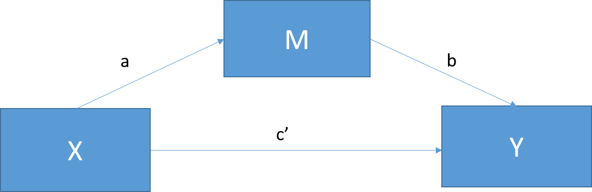
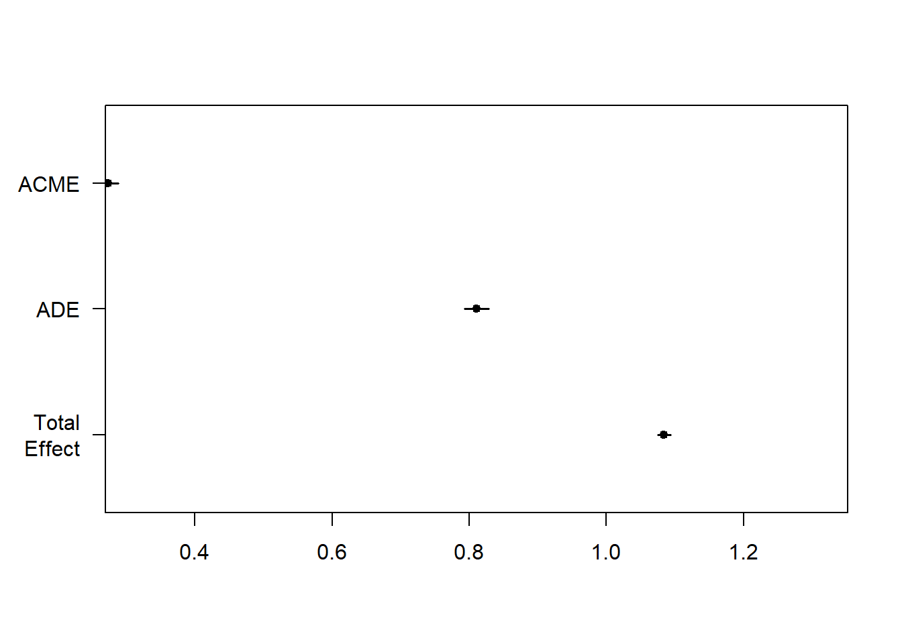

- Teaching the concepts - Jie (75 min)
Objective of this session
To learn how to conduct mediation analyses using the traditional approaches, along with understanding the assumptions and limitations of the methods.
What is Mediation analyses?
The purpose of mediation analyses is to determine if the effect of an independent variable (X) on a dependent variable (Y) can be explained by a third variable-mediating variable (M). Thus, mediation analyses not only answer whether two variables are related, but also why and how. This can be visualized in the following figure:

- the total effect –>c, that is the total effect of the independent variable on the dependent variable
- the direct effect –> c’, that is the effect of the independent variable on the dependent variable that is not mediated by the mediator
Traditional approaches for mediation analysis
The most widely used two traditional approaches to mediation analysis are the difference method and the product method (also known as Baron&Kenny).
the product method - indirect effect=a*b
the difference method - indirect effect=c-c’
Here is the standard Equations for Mediator and Outcome (for the case of a continuous mediator and a continuous outcome)
- ( E(M|A=a, C=c) = \(\beta_0\) + \(\beta_1a\) + \(\beta_2c\) (1.1)
- ( E(Y|A=a, M=m, C=c) = \(\theta_0\) + \(\theta_1a\) + \(\theta_2m\) + \(\theta4c\) (1.2)
- ( E(Y|A=a, C=c) = \(\theta_0'\) + \(\theta_1'a\) + \(\theta4'c\) (1.3)
Empirical example in nutritional epidemiology
In this session, we will use an example to address a question about mediation in nutritional epidemiology using both methods.
It has been suggested that red meat is associated with higher blood glucose levels and a greater risk of Type 2 diabetes (T2D). However, we might be more interested in the mechanisms behind this relationship. Does red meat intake influence blood glucose levels directly or through other mechanisms (e.g., inflammation)?
Does greater consumption of red meat lead to elevated levels of blood glucose by mediating specific inflammation biomarkers?
Based on the literature, we hypothesize that higher red meat intake is associated with elevated inflammatory levels, which, in turn, increase blood glucose, as depicted in the figure below.
# Creating The causal diagram for a mediation model
library(DiagrammeR)Warning: package 'DiagrammeR' was built under R version 4.2.3grViz("
digraph {
graph []
node [shape = plaintext]
X [label = 'Red meat']
M [label = 'Inflammation']
Y [label = 'Blood glucose']
edge [minlen = 1.5]
X->Y [label = 'Path C*', xlabel = 'Path C']
X->M [taillabel = 'Path A']
M->Y [label = 'Path B']
{ rank = same; X; Y }
{ rank = min; M;}
}")Example Dataset: A Brief Overview
Note
We’ll explore the relationship between red meat intake and glucose levels in the National Health and Nutrition Examination Survey (NHANES) dataset, which has been modified for this course with simulated variables. NHANES is a program of studies designed to assess the health and nutritional status of adults and children in the United States. The survey includes extensive data collected through interviews and physical examinations.
Specifically, we want to understand how much a new inflammatory biomarker explains the relation between red meat intake and glucose levels.
The variables used in the dataset: -exposure of interest (x): red meat intake: (continuous variable, grams per day) -outcome (y): plasma fasting glucose (continuous variable, ) -mediator (m): a new inflammatory biomarker (continuous variable)
Four demographic variables will be included in the analyses: age, gender, education, and smoking. We assume that adjusting for these four confounders is sufficient to block the backdoor paths. Further discussion on confounding adjustment will be covered in the following session. For the convenience of analysis, I have transformed the mediator (m) and outcome variable (y) so that they follow a normal distribution.
Method 1: Baron & Kenny (the product method)
According to Baron and Kenny (1986), the following criteria need to be satisfied for a variable to be considered a mediator: -(i) The exposure should be associated with the mediator; -(ii) in the model for the outcome that includes both the exposure and mediator, the mediator should be associated with the outcome; -(iii)in the model for the outcome that includes only the exposure, the exposure should be associated with the outcome; -(iv)when controlling for the mediator, the association between the exposure and outcome should be reduced, with the strongest demonstration of mediation occuring when the path from the exposure to the outcome, when controlling for the mediator is zero.
The following shows the basic steps for mediation analysis suggested by Baron & Kenny.
Step1-Estimate the relationship between X on M (path A)
That is to check the relation between exposure (red meat) and the mediator (inflammatory biomarker), which corresponds to criteria (i). A mediation makes sense only if X affects M. If X and M have no relationship, M is just a third variable that may or may not be associated with Y.
As the mediator is a continuous variable, we can build a linear regression model, adjusting for confounders on the pathway between X and M.
$ (E(M|A=a, C=c)$ = \(\beta_0\) + \(\beta_1a\) + \(\beta_2c\) (1.1)
#first load the dataset
load("C:/Users/au644508/OneDrive - Aarhus universitet/Dokumenter/Mediation course/mediation-analysis-course/sessions/data/nhanes_dataset.RData")
fita <- lm(m ~ x + age + gender + education_clean + smoke, data=nhanes)
summary(fita)
Call:
lm(formula = m ~ x + age + gender + education_clean + smoke,
data = nhanes)
Residuals:
Min 1Q Median 3Q Max
-4.2892 -0.6737 0.0135 0.6638 3.9884
Coefficients:
Estimate Std. Error t value Pr(>|t|)
(Intercept) 0.4661001 0.0400088 11.650 <2e-16 ***
x 0.3979264 0.0022968 173.252 <2e-16 ***
age -0.0003177 0.0005759 -0.552 0.5812
genderFemale -0.0401686 0.0231644 -1.734 0.0829 .
education_cleanCollege and above 0.0172594 0.0242118 0.713 0.4760
smokeNo 0.0403827 0.0225770 1.789 0.0737 .
---
Signif. codes: 0 '***' 0.001 '**' 0.01 '*' 0.05 '.' 0.1 ' ' 1
Residual standard error: 1.002 on 8563 degrees of freedom
(20755 observations deleted due to missingness)
Multiple R-squared: 0.7997, Adjusted R-squared: 0.7995
F-statistic: 6836 on 5 and 8563 DF, p-value: < 2.2e-16Step2- Estimate the relationship between M on Y controlling for X (pathB)
That is to build the model between inflammatory biomarker and glucose levels, controlling for red meat intake. This step corresponds to criteria (ii).
\((E(Y|A=a, M=m, C=c)\) = \(\theta_0\) + \(\theta_1a\) + \(\theta_2m\) + \(\theta4c\) (1.2)
fitb <- lm(y ~ x + m + age + gender + race + education + smoke , data=nhanes)
summary(fitb)
Call:
lm(formula = y ~ x + m + age + gender + race + education + smoke,
data = nhanes)
Residuals:
Min 1Q Median 3Q Max
-6.9002 -1.3430 -0.0029 1.3859 8.2529
Coefficients:
Estimate Std. Error t value Pr(>|t|)
(Intercept) 107.855876 0.097733 1103.579 <2e-16 ***
x 0.810523 0.009772 82.941 <2e-16 ***
m 0.686302 0.021639 31.716 <2e-16 ***
age 1.500457 0.001177 1274.292 <2e-16 ***
genderFemale -0.022511 0.046414 -0.485 0.628
raceNon-Hispanic Black 0.006464 0.048336 0.134 0.894
raceOther 0.179376 0.119430 1.502 0.133
raceDon't know 1.530786 1.159852 1.320 0.187
education 0.028011 0.017605 1.591 0.112
smokeNo 0.024657 0.045155 0.546 0.585
---
Signif. codes: 0 '***' 0.001 '**' 0.01 '*' 0.05 '.' 0.1 ' ' 1
Residual standard error: 2.007 on 8587 degrees of freedom
(20727 observations deleted due to missingness)
Multiple R-squared: 0.9951, Adjusted R-squared: 0.9951
F-statistic: 1.931e+05 on 9 and 8587 DF, p-value: < 2.2e-16Step 3-Estimate the relationship between X on Y-path C
That is to build the model between red meat intake and glucose levels, without adjusting for inflammatory biomarker. The only difference between step 2 and step 3 is that mediator is not included in the model.
\((E(Y|A=a, C=c)\) = \(\theta_0'\) + \(\theta_1'a\) + \(\theta4'c\) (1.3)
fitc <- lm(y ~ x + age + gender + race + education + smoke, data=nhanes)
summary(fitc)
Call:
lm(formula = y ~ x + age + gender + race + education + smoke,
data = nhanes)
Residuals:
Min 1Q Median 3Q Max
-7.5518 -1.4470 0.0064 1.4344 8.4541
Coefficients:
Estimate Std. Error t value Pr(>|t|)
(Intercept) 108.148357 0.102832 1051.703 <2e-16 ***
x 1.083562 0.004887 221.716 <2e-16 ***
age 1.500304 0.001244 1205.591 <2e-16 ***
genderFemale -0.051189 0.049045 -1.044 0.2967
raceNon-Hispanic Black -0.006036 0.051084 -0.118 0.9059
raceOther 0.223763 0.126216 1.773 0.0763 .
raceDon't know 2.226142 1.225614 1.816 0.0694 .
education 0.039439 0.018603 2.120 0.0340 *
smokeNo 0.051668 0.047715 1.083 0.2789
---
Signif. codes: 0 '***' 0.001 '**' 0.01 '*' 0.05 '.' 0.1 ' ' 1
Residual standard error: 2.122 on 8588 degrees of freedom
(20727 observations deleted due to missingness)
Multiple R-squared: 0.9945, Adjusted R-squared: 0.9945
F-statistic: 1.944e+05 on 8 and 8588 DF, p-value: < 2.2e-16
Note
Then we can estimate the direct effect and indirect effect:
- direct effect = \(\theta_1\)
- indirect effect = \(\beta_1 \theta_2\)
- total effect = \(\theta_1'\)
In our example, - the direct effect (\(\theta_1\)) of red meat on glucose levels can be assessed by the coefficient of red meat in model b, which is 0.811.
direct_ma <- fitb$coefficients[2]
direct_ma x
0.8105229 - the indirect effect can be assessed by calculating the product of \(\beta_1\) \(\theta_2\). The intuition of the indirect effect is that the mediation depends on the extent to which the exposure changes the mediator (path A) and the extent to which the mediator changes the outcome (path B). In this example, the indirect effect between red meat and glucose levels through inflmmatory biomarker is 0.273.
indirect_ma <- fita$coefficients[2]*fitb$coefficients[3]
indirect_ma x
0.2730978 - the total effect (\(\theta_1'\)) of red meat on glucose levels can be assessed by the coefficient of red meat in model c, which is 1.084. You might have noticed the total effect also equals the sum of the direct effect and indirect effect.
total_ma <- fitc$coefficients[2]
total_ma x
1.083562 Method 2-Difference approach
The difference approach is more commonly used in epidemiologic domain. And the rational of this approach is to compare the effect of X on Y without and with adding M in the models.
If a mediation effect exists, the effect of X on Y will be attenuated when M is included in the regression, indicating the effect of X on Y goes through M. If the effect of X on Y completely disappears, M fully mediates between X and Y (full mediation). If the effect of X on Y still exists, but in a smaller magnitude, M partially mediates between X and Y (partial mediation).
Back to the example, the indirect effect will be the coefficient of red meat in model c (without adjusting for m) minus the coefficent of red meat in model b (adjusting for m), which equals to 0.273.
indirect_mb <- fitc$coefficients[2]-fitb$coefficients[2]
indirect_mb x
0.2730394
Note
If you recall the four criteria Originally suggested by Baron and Kenny, they proposed that ‘Path C must be significantly different from 0 to ensure there is a total effect between X and Y’, but this step might be controversial. Even if we don’t find a significant association between X and Y, we could proceed to the next step if we have a strong theoretical basis for their relationship.
Group work- 15 minutes
- Discuss with your group about the two tradiational approaches, did you get the same results?
- Discuss the scenarios under which there might be no significant association between X and Y.
Use mediation packages
Now we have estimated the direct and indirect effect using the product and the difference methods.You might have noticed what you got so far are only point estimates, but what if you want to see if this mediation effect is statistically significant (different from zero or not)?
To do so, there are two main approaches: the Sobel test (Sobel, 1982) and bootstrapping (Preacher & Hayes, 2004).
Here I will demonstrate that we can use the mediate() function in ‘mediation’ package (Tingley et al. 2019) to conduct mediation analysis. One of the very good options to conduct mediation analysis using the mediation package is we can get confidence interval by bootstrapping.
Let’s load up the R packages.
devtools::install_cran("mediation")Skipping install of 'mediation' from a cran remote, the SHA1 (4.5.0) has not changed since last install.
Use `force = TRUE` to force installationlibrary(mediation) #Mediation packageWarning: package 'mediation' was built under R version 4.2.3Loading required package: MASSWarning: package 'MASS' was built under R version 4.2.3Loading required package: MatrixWarning: package 'Matrix' was built under R version 4.2.3Loading required package: mvtnormWarning: package 'mvtnorm' was built under R version 4.2.3Loading required package: sandwichWarning: package 'sandwich' was built under R version 4.2.3mediation: Causal Mediation Analysis
Version: 4.5.0mediate() takes two model objects as input (X → M and X + M → Y) and we need to specify which variable is an IV (treatment) and a mediator (mediator). For bootstrapping, set boot = TRUE and sims to at least 500.
# Fit mediator model
lm_m <- lm(m ~ x + age + gender + education + smoke, data = nhanes)
# Fit outcome model
lm_y <- lm(y ~ x + m + age + gender + education + smoke, data = nhanes)
# Run mediation analysis
results <- mediate(lm_m, lm_y, treat = "x", mediator = "m", boot = TRUE, sims = 500)Running nonparametric bootstrapsummary(results)
Causal Mediation Analysis
Nonparametric Bootstrap Confidence Intervals with the Percentile Method
Estimate 95% CI Lower 95% CI Upper p-value
ACME 0.273 0.258 0.29 <2e-16 ***
ADE 0.811 0.793 0.83 <2e-16 ***
Total Effect 1.084 1.075 1.09 <2e-16 ***
Prop. Mediated 0.252 0.238 0.27 <2e-16 ***
---
Signif. codes: 0 '***' 0.001 '**' 0.01 '*' 0.05 '.' 0.1 ' ' 1
Sample Size Used: 8597
Simulations: 500 ADE stands for average direct effects. It describes the direct effect of the x on the y when controlling for the mediator. Note this estimate is the same as the coefficient We got in the product and difference method (0.811). But be aware we are able to get confidence interval and significance levels for the indirect effect, not only its two individual parts by bootstrapping. This is something we need for reporting the mediation.
ACME stands for average causal mediation effects. This is the indirect effect of the IV on the DV that goes through the mediator. Note that ACME estimated to be 0.273, which is the same to the traditional approached we just used.
Total Effect stands for the total effect (direct + indirect) of the IV onto the DV. We can also get it by adding the ACME () and the ADE () to receive the total effect.
Prop. Mediated describes the proportion of the effect of the IV on the DV that goes through the mediator. It’s calculated by dividing the ACME (0.273) by the total effect 1.084) and yields 0.252. The result suggests the mediator (inflammaotry biomarker) explains 25.2% proportion of the effect of red meat on glucose levels. We will talk more about proportion mediation in Session ?.
#We can also plot the estimates
plot(results)
For details of the mediate() package, please refer to (mediation_rpackage 2014).
What do traditional approach succeed and fail?
When fulfill the criterias, simple tools like regression can be used to estimate a causal mediation effect.
- no unmeasured confounding
- no exposure-mediator interaction
- linear relationship
- rare binary outcome
Reporting the mediation
- assumptions
- introduction of dataset
- difference and product method with code-along
- linear outcome
- binary outcome
Go through the limitation of the traditional approach - Omar (15 min) - limitations of traditional approach - non-linearity - interactions - multi mediators